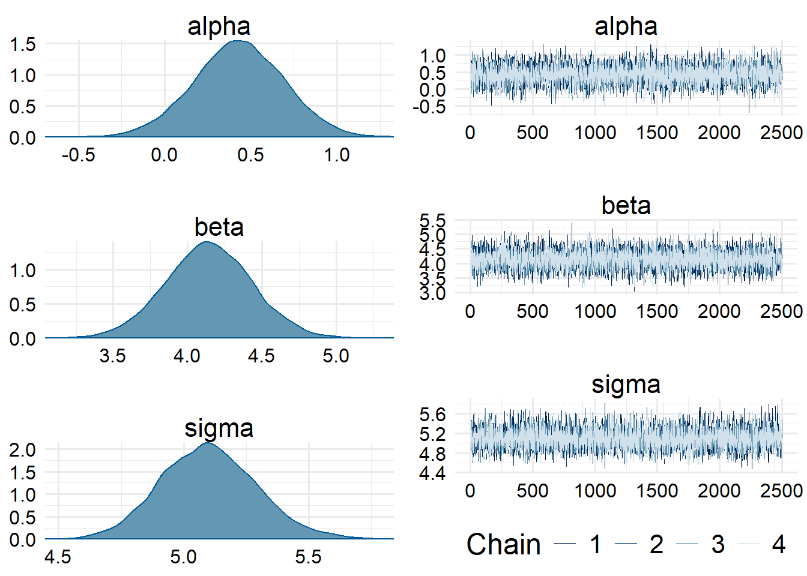

List of 8
$ n : num 400
$ alpha: num 1
$ beta : num 4
$ sigma: num 5
$ y_min: num -9
$ y_max: num 12
$ x_min: num -1
$ x_max: num 24 Example Model 3: Censored outcome and censored predictor
Now that we’ve covered the simple cases, we’ll try to be a bit more adventurous. For the next model, we’ll simulate data where both the outcome and the predictor model are censored. We’ll also implement both lower and upper limits of detection for both the outcome and the predictor, so we’ll only have one main example in this section. We’ll also only implement one method – in general the method where we integrate out censored values has been easier to code, so we’ll stick with that method for both our predictor and our output here.
4.1 Data simulation
As usual, we’ll begin our data simulation by writing out the true data generating process (likelihood model) that we’ll use to generate the data. This model is a bit complicated–of course we’ll have the same regression part of the model as we’ve had before, that relates the latent \(y^*\) values to the latent \(x^*\) values. But then the observation model will include a censoring scheme for the observation of both \(x\) and \(y\).
Importantly, in this model we also need to specify a distributional assumption for \(X\), otherwise we can’t estimate what the uncensored \(X\) values should look like. So for the sake of simplicity, we’ll assume a Gaussian distribution for the \(x\)-values as well, although this is definitely something we need to think more about in the future. Furthermore, let’s assume \(x\) has a standard normal distribution, since we can standardize \(x\) before modeling.
\[ \begin{align*} y_i &= \begin{cases} y_\min, & y_i^* \leq y_\min \\ y_i^* & y_\min < y_i^* \leq y_\max \\ y_\max & y_\max < y_i^* \end{cases} \\ x_i &= \begin{cases} x_\min, & x_i^* \leq x_\min \\ x_i^* & x_\min < x_i^* \leq x_\max \\ x_\max & x_\max < x_i^* \end{cases} \\ y^*_i &\sim \mathrm{Normal}(\mu_i, \sigma^2) \\ \mu_i &= \alpha + \beta \cdot x^*_i \\ x_i^* &\sim \mathrm{Normal}(0, 1) \end{align*} \]
Again, we can choose whatever parameters we want for the simulation. I played around with the simulation until I got a plot I thought looked about right. Those simulation parameters are printed below.
So with those parameters, we can then simulate some data according to this generative model.
# A tibble: 400 × 5
x_star mu y_star x y
<dbl> <dbl> <dbl> <dbl> <dbl>
1 1.80 8.19 7.08 1.80 7.08
2 1.16 5.64 6.71 1.16 6.71
3 0.155 1.62 6.05 0.155 6.05
4 0.0988 1.40 1.24 0.0988 1.24
5 -3.16 -11.6 -7.35 -1 -7.35
6 -0.682 -1.73 -1.46 -0.682 -1.46
7 1.56 7.25 3.40 1.56 3.40
8 -0.195 0.219 -0.216 -0.195 -0.216
9 0.628 3.51 7.10 0.628 7.10
10 0.821 4.28 0.0773 0.821 0.0773
# ℹ 390 more rowsSince we’ve simulated the data, we know the latent values and the observed values, so we can plot our simulated data in order to get a better understanding of how much the censoring process will affect our estimates.
Plotting code
sim_data |>
ggplot() +
geom_hline(
yintercept = c(sim_parms$y_min, sim_parms$y_max),
alpha = 0.5,
linewidth = 1,
linetype = "dashed",
color = "darkgray"
) +
geom_vline(
xintercept = c(sim_parms$x_min, sim_parms$x_max),
alpha = 0.5,
linewidth = 1,
linetype = "dashed",
color = "darkgray"
) +
geom_segment(
data = subset(sim_data, (x != x_star) | (y != y_star)),
aes(x = x_star, xend = x, y = y_star, yend = y),
color = "gray",
alpha = 0.25,
lwd = 1
) +
geom_point(aes(x = x_star, y = y_star), color = "gray") +
geom_point(aes(x = x, y = y)) +
coord_cartesian(
xlim = c(-3, 3),
ylim = c(-22, 22)
) +
labs(
x = "Independent variable",
y = "Dependent variable"
)
We can see that a substantial amount of the data points are censored. In total, \(16.5\%\) of records were censored in \(x\) only, \(13.25\%\) of records were censored in \(y\) only, and \(5\%\) of records were censored in both \(x\) and \(y\). Thus, \(24.75\%\) of records were censored in some way.
I also deliberately set the upper and lower limits for both \(x\) and \(y\) to be asymmetrical so we can more clearly see how our censoring process can strongly bias the estimates: we have more records censored at lower values than higher values, which gives us a shifted window where we observe data.
So now that we have the data simulated, we want to try to recover the original parameters with a Bayesian model.
4.2 Stan data setup
I also want to write the Stan code to accept data in a specific format that we want to test. The data should be formatted like the table below.
| X | X_L | X_U | Y | Y_L | Y_U |
|---|---|---|---|---|---|
| \(x_1\) | \(x_\min\) | \(x_\max\) | \(y_1\) | \(y_\min\) | \(y_\max\) |
| \(x_2\) | \(x_\min\) | \(x_\max\) | \(y_2\) | \(y_\min\) | \(y_\max\) |
| \(\vdots\) | \(\vdots\) | \(\vdots\) | \(\vdots\) | \(\vdots\) | \(\vdots\) |
| \(x_n\) | \(x_\min\) | \(x_\max\) | \(y_n\) | \(y_\min\) | \(y_\max\) |
Here, \(x_\min\) is the lower limit of detection for \(x\) and \(x_\max\) is the upper limit of detection for \(X\) (and similar for \(Y\)). Eventually, if this is the data format we decide to permanently adopt going forward, we will want to write a suite of helper functions to conveniently get the data in this form. But for now I will do it manually. Fortunately it is quite easy. And if the censoring limits changed for any observations, it would have been easier to store the data in this format in the first place.
stan_data <-
sim_data |>
dplyr::select(x, y) |>
dplyr::mutate(
x_l = sim_parms$x_min,
x_u = sim_parms$x_max,
.after = x
) |>
dplyr::mutate(
y_l = sim_parms$y_min,
y_u = sim_parms$y_max,
.after = y
)
stan_data |> print(n = 5)# A tibble: 400 × 6
x x_l x_u y y_l y_u
<dbl> <dbl> <dbl> <dbl> <dbl> <dbl>
1 1.80 -1 2 7.08 -9 12
2 1.16 -1 2 6.71 -9 12
3 0.155 -1 2 6.05 -9 12
4 0.0988 -1 2 1.24 -9 12
5 -1 -1 2 -7.35 -9 12
# ℹ 395 more rowsNow we just need to convert the data frame to a list format and add a variable for the number of records.
stan_list <- as.list(stan_data)
stan_list$N <- nrow(stan_data)
str(stan_list)List of 7
$ x : num [1:400] 1.7973 1.1599 0.1547 0.0988 -1 ...
$ x_l: num [1:400] -1 -1 -1 -1 -1 -1 -1 -1 -1 -1 ...
$ x_u: num [1:400] 2 2 2 2 2 2 2 2 2 2 ...
$ y : num [1:400] 7.08 6.71 6.05 1.24 -7.35 ...
$ y_l: num [1:400] -9 -9 -9 -9 -9 -9 -9 -9 -9 -9 ...
$ y_u: num [1:400] 12 12 12 12 12 12 12 12 12 12 ...
$ N : int 4004.3 Stan code
Of course as usual we need to compile the Stan code. The code is also included here for reference.
mod_pth <- here::here(pth_base, "Ex3.stan")
mod <- cmdstanr::cmdstan_model(mod_pth, compile = FALSE)
mod$compile(force_recompile = TRUE)4.4 Model fitting and performance
Now that the model is successfully compiled, we need to generate MCMC samples from the posterior distribution. We’ll use 4 chains (run in parallel) with 500 warmup iterations and 2500 sampling iterations each, for a total of 10000 samples overall, which should be plenty for this problem. Otherwise, we’ll leave the control parameters at their default values.
fit <- mod$sample(
stan_list,
seed = 123123,
parallel_chains = 4,
iter_warmup = 500,
iter_sampling = 2500,
show_messages = FALSE
)Chain 1 Informational Message: The current Metropolis proposal is about to be rejected because of the following issue:Chain 1 Exception: normal_lpdf: Scale parameter is 0, but must be positive! (in 'C:/Users/Zane/AppData/Local/Temp/RtmpkHFdhX/model-5d3c43851799.stan', line 62, column 3 to column 31)Chain 1 If this warning occurs sporadically, such as for highly constrained variable types like covariance matrices, then the sampler is fine,Chain 1 but if this warning occurs often then your model may be either severely ill-conditioned or misspecified.Chain 1 As usual, we want to check the diagnostics, and fortunately cmdstanr gives us an easy to use diagnostic flagger.
fit$cmdstan_diagnose()Processing csv files: C:/Users/Zane/AppData/Local/Temp/RtmpkHFdhX/Ex3-202403032224-1-336e28.csv, C:/Users/Zane/AppData/Local/Temp/RtmpkHFdhX/Ex3-202403032224-2-336e28.csv, C:/Users/Zane/AppData/Local/Temp/RtmpkHFdhX/Ex3-202403032224-3-336e28.csv, C:/Users/Zane/AppData/Local/Temp/RtmpkHFdhX/Ex3-202403032224-4-336e28.csv
Checking sampler transitions treedepth.
Treedepth satisfactory for all transitions.
Checking sampler transitions for divergences.
No divergent transitions found.
Checking E-BFMI - sampler transitions HMC potential energy.
E-BFMI satisfactory.
Effective sample size satisfactory.
Split R-hat values satisfactory all parameters.
Processing complete, no problems detected.We can examine the trace plots and posterior distributions of the parameters of interest to confirm that there is no funny business.
post <- posterior::as_draws_array(fit)
bayesplot::mcmc_combo(post, par = c("alpha", "beta", "sigma"))
And so now we can finally examine the fitted values and compare them to our true simulation values.
fit$summary() |>
dplyr::filter(variable != "lp__") |>
knitr::kable(digits = 2)| variable | mean | median | sd | mad | q5 | q95 | rhat | ess_bulk | ess_tail |
|---|---|---|---|---|---|---|---|---|---|
| alpha | 0.43 | 0.43 | 0.26 | 0.26 | 0.00 | 0.86 | 1 | 8190.67 | 7220.56 |
| beta | 4.14 | 4.14 | 0.29 | 0.29 | 3.66 | 4.63 | 1 | 9034.90 | 7285.48 |
| sigma | 5.10 | 5.10 | 0.19 | 0.19 | 4.80 | 5.42 | 1 | 9738.63 | 7383.51 |
We can see that our model estimated the slope and variance quite well, although it is not doing too great at figuring out the intercept. In fact, the true value of \(\alpha = 1\) isn’t even in the credible interval. However, the estimates for \(\beta\) and \(\sigma\) are very close to the true estimates. In most applications, the intercept is not too useful and the slope is what we want an accurate estimate of anyway, so this is probably acceptable.
TODO figure out what else needs to go in this example.